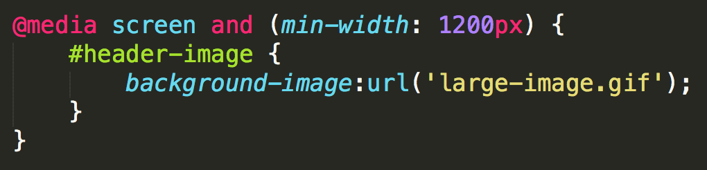
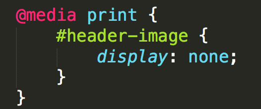

Intro to Responsive Web Design
jtcoders.github.io/responsive-web-design
What is it!?
RWD is a design approach that suggests that the design & development of a site shoud respond to the user's behavior and environment.
Wait, people really care?
- 91% of U.S. Citizens have their smart phone within reach 24/7
- Smartphone users check their phones 150x every day
- 25% of mobile users in the U.S. don't even own a laptop or desktop
Why it's awesome
RWD modifies the presentation of a site, without modifying the content of the page. So no matter what, every user has access to the same information.
How did we get here?
- In 2010, Ethan Marcotte coined the tearm in an article on A List Apart
- In 2011, he wrote the book on it (literally), called: "Responsive Web Design"
- In 2012, RWD was the #2 trend in web design
- 2013 was called "The Year of Responsive Web Design" because it was and still is a cost effective alternative to mobile apps
The Ingredients of RWD
- A Flexible foundation
- Flexible images
- CSS Media Queries to make the magic happen
Fixed vs. Fluid Width pages
Fixed
- Fixed websites have a set width for the wrapper, usually 960px to 1024px.
- The elements inside the wrapper have a set width, or percentage of the wrapper width.
- No matter the screensize, the user always sees the same size site.
Fixed vs. Fluid Width pages
Fluid
- Also referred to as a liquid layout.
- Majority of the components, including the wrapper, have percentages for their widths.
- The layout adjusts for the width of the user's screen resolution.
Containers
Wrappers are a good way to center content if the screen width is wider than your content.
.container {
width: 100%; /* take up full viewport width */
max-width: 1400px; /* if viewport is larger than 1440px,
don't let it take up 100% */
margin: 0 auto; /* center content in the viewport */
}
- The container will take up 100% of the screen if the width of the viewport is less than 1440px.
- If the viewport is wider than 1440px, it will reach it's max width, and become centered in the viewport.
Exercise
- Open this pen (http://cdpn.io/e/dXvzEq) and fork it.
- Convert the widths to fluid, with the content centered on wider screens.
- Re-size the window to check your work.
Flexible images
Text scales easily on smaller devices, but images are a bit tricky.
Images will overflow their container elements if they're too big for them.
That's annoying.
Enter max-width
By using max-width on images, they will only expand to the size of their parent.
If their parent has no width, it will just expand to the width of the viewport.
img {
max-width: 100%;
}Exercise
- Open the same pen.
- Set the images to re-size with the content.
- Re-size the window to check your work.
Media Queries
Media queries apply certain CSS in certain situations.
- Print Media
- iPhone
- iPad
- Even larger screens
Include Media Queries Last
They will overwrite previous styles because they are last in the cascade.


Exercise
- Open the same pen.
- Add a print media query which removes the header and footer.
- Open debug view and use ctrl+p to check your work in the print preview.
Standard MQs
For devices that have dimensions no smaller than 320px and are not larger than 480px
/* Smartphones (portrait and landscape) */
@media only screen and (min-device-width : 320px)
and (max-device-width : 480px) {
/* Styles */
}iPad dimensions with the orientation in landscape.
/* iPads (landscape) ----------- */
@media only screen and (min-device-width : 768px)
and (max-device-width : 1024px)
and (orientation : landscape) {
/* Styles */
}How they work
Rather than looking for a type of device, they look at the capability of the device. You can use them to check for all sorts of things.
- Width & height of the viewport
- Width & height of the device
- Orientation - landscape or portrait
- Resolution - retina or normal
Mobile First
By designing sites with mobile first in mind, it makes scaling them down a lot easier.
Mobile first allows us to simplify the user flow to its basic elements and then enhance it as the screen size increases.
iPhone:

Tablet
Desktop
Exercise
- Open the same pen.
- Create a tablet view, with the sidebar below the main contant, and the sidebar list items displayed horizontally.
- Create a mobile view, with the menu items stacked vertically, and header and footer content centered.
- Open debug view, and copy the link into http://ami.responsivedesign.is to check your work.
BONUS: Change the order of the styles and queries to mobile-first.
Viewport Meta
Use this to control the size of the viewport.
<meta name="viewport" content="width=device-width,
initial-scale=1;">width=device-width makes the page width match the width of the device.
initial-scale=1 makes the browser not to zoom when changing orientation
More info in Google PageSpeed docs.
Retina Images
Retina screens have twice the pixel density than regular screens.
If you're not using SVG Graphics, you'll need two images, one for regular resolution and one for retina.
2x Media Queries
Target only retina screens by using this media query:
@media
(-webkit-min-device-pixel-ratio: 2),
(min-resolution: 192dpi) {
/* Retina-specific stuff here */
}This takes care of two things, 2x pixel ratio on iOS devices and "high res" Android screens.
2x Images
Regular resolution icon
2x resolution icon
@media
(-webkit-min-device-pixel-ratio: 2),
(min-resolution: 192dpi) {
.icon {
background-image: url(images/icon-2x.png) no-repeat 0 0;
background-size: 20px 20px;
}
}Or, you could just use SVG
SVG Graphics
Designers everywhere have always wanted to use vector based graphics on their sites because of their quality.
Well now you can!
It's not that new really
It's been a W3C (World Wide Web Consortium) standard since 1999
In recent years browsers are becoming more and more compatable with SVG graphics.
Once upon a time, .png graphics weren't supported in browsers, soon the world will know about SVG!
How to use SVG today
Use Adobe Illustrator, or other vector program, to create a high quality image.
Save it as a .svg file.
Save a high res .png image as a fallback.
Include SVG
Use SVG as an image:
<img src="image.svg" onerror="this.onerror=null; this.src='image.png'">Use SVG as a background image:
HTML:
<a href="/" class="logo">
GDI
</a>CSS:
.logo {
display: block;
color: transparent;
width: 100px;
height: 82px;
background: url(kiwi.svg);
background-size: 100px 82px;
}Browser Support
Our favorite topic - Internet Explorer
Chris Coyer has written an amazing article with tons of work arounds for our BFF IE8.